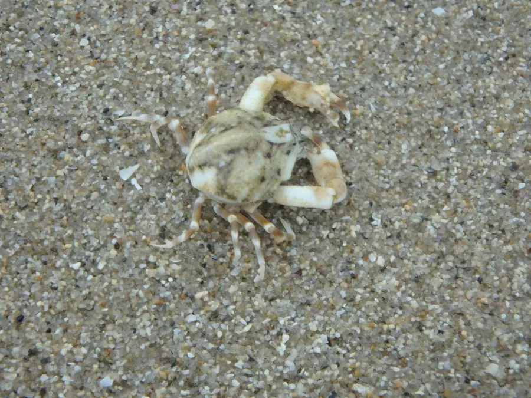

甲壳动物 · 动物界
豆形拳蟹 Philyra pisum

头胸甲圆小如豆的小型蟹类，螯足短小，生活在潮间带和浅海沙泥底，退潮时常在泥滩上爬行，是沿海常见的小蟹。
- 分类
- 门节肢动物门纲软甲纲目十足目科玉蟹科属拳蟹属
- 栖息环境
- 潮间带和浅海沙泥底，常藏在石块、贝壳和海草间
- 地理分布
- 中国沿海、日本和东南亚沿海
- 保护级别
- IUCN 暂无评估；中国未列入国家重点保护名录
物种志
豆形拳蟹头胸甲宽 1–1.5 cm，呈圆形或卵圆形，体色灰白、浅黄或淡绿，表面有细颗粒；螯足短小，指节呈拳状，步足细短，适合在沙泥表面爬行。
它分布于中国沿海、日本和东南亚的潮间带和浅海沙泥底，退潮时在泥滩和沙地上活动，取食有机碎屑、藻类和小型底栖动物。豆形拳蟹体型小，常藏在石块下、贝壳间和海草中，遇到危险时迅速钻进沙里或躲进缝隙，它的甲壳颜色常随环境略有变化。它是潮间带食物网中的常见环节，也是鸟类和鱼类的食物，繁殖期雌蟹抱卵，幼体在海水中浮游发育。退潮后的泥滩上常能见到它爬行。目前 IUCN 暂无评估；中国未列入国家重点保护名录。
形态与习性
- 食性有机碎屑、藻类和小型底栖动物
- 体型头胸甲宽 1–1.5 cm
- 识别头胸甲圆小如豆，螯足短小呈拳状
- 习性退潮时在泥滩爬行，遇险钻沙
- 繁殖雌蟹抱卵，幼体在海水中浮游
- 生态作用潮间带食物网中的常见环节
趣味知识
- 豆形拳蟹的甲壳只有一两厘米宽，圆圆的像一颗小豆子。
- 它的螯足短小，指节蜷曲如拳，名字里的“拳”由此而来。
- 退潮后的泥滩上，常能看到这些小蟹匆匆爬过。